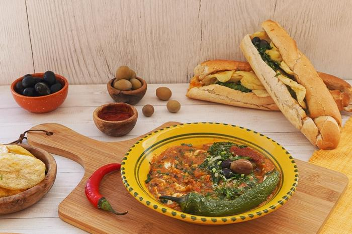

Kaftaji

Description
The Tunisian kaftaji dish is one of the most famous traditional Tunisian dishes, and it is one of the side dishes that is served alongside Tunisian food dishes, and the Tunisian kaftaji dish depends on vegetables Basically, this is why it is considered one of the most delicious and useful dishes at the same time, and it is also possible to diversify its recipes and work in more than one way
Ingredients
- 2 tomatoes
- 3 or peppers
- 1 Zucchini
- 2 potatoes
- 2 eggs
- frying oil
- salt, tabel-karouia
- olive oil
Steps
- Prepare the vegetables (peel, wash) and cut them into cubes or slices.
- Fry each type of vegetable alone (in order: potato, zucchini, peppers, tomatoes) so you don't have to change the oil every time.
- Fry the eggs separately, then chop them finely.
- Mix everything together, add salt, a pinch of tabel-karouia (which brings out the taste of the pepper), and drizzle with a nice dash of raw olive oil.